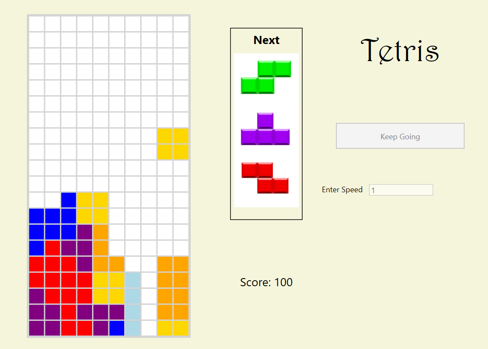

Tetris
Simple game of Tetris. You can set the speed of the game and start playing.
Technologies
I used Windows Presentation Foundation (WPF) with C# and XAML. I took an Object-Oriented
approach making this game, designing models for all the different componenets.

Distributed Video Game Exchange
This is a Grafana dashboard for a video game exchange system that can handle over 10,000 requests a
minute.
Technologies
I distributed the system used Docker to containerize all the different services. I used NGINX as a reverse proxy
to distribute the requests between the 10 API instances. The APIs were generated using OpenAPI nodejs-express-generator.
I used a Mongo Database for persistence and I used Kafka as my message stream for my standalone email service. Then I used
Prometheus to scrape metrics from all my services and used Grafana to visualize the different metrics.